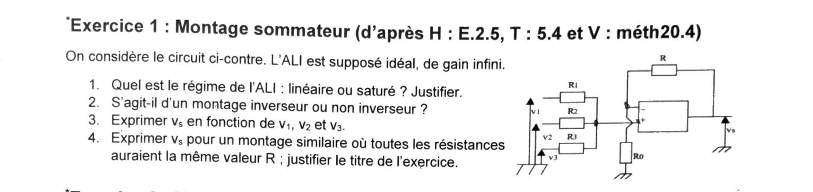
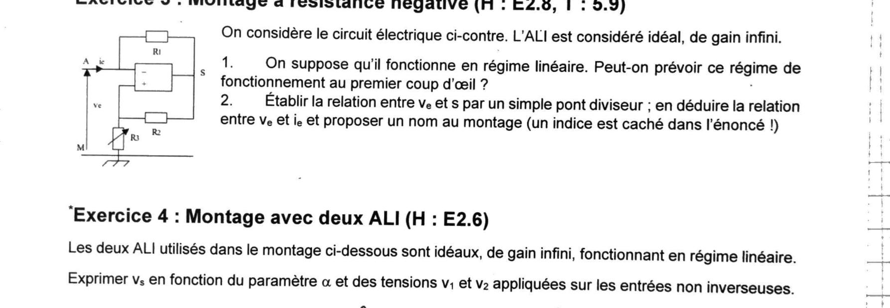
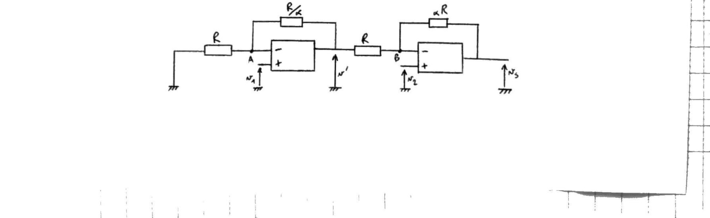
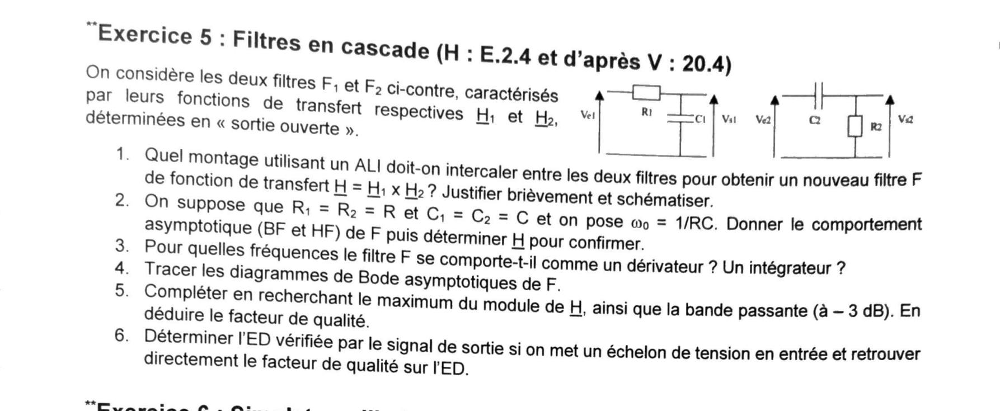
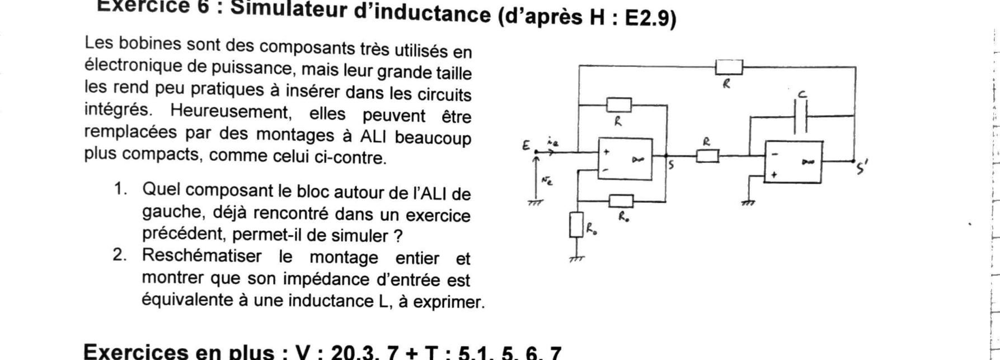

TD3 — Montages à ALI : sommateur, pseudo-intégrateur, résistance négative, filtres en cascade, gyrateur
Les 6 exercices du TD3 corrigés un par un, avec le même niveau de détail que les TD précédents : montage sommateur inverseur, pseudo-intégrateur (compromis intégrateur/amplificateur), convertisseur à résistance négative, montage à deux ALI en cascade, filtres passe-bas/passe-haut mis en cascade (Bode, facteur de qualité, équation différentielle) et simulateur d'inductance à deux ALI (gyrateur). AM2 · P2030 · Semestre 3 — D. Courtois, 21/09/2026.

1) Quel est le régime de l'ALI : linéaire ou saturé ? Justifier.
La sortie \(v_s\) ne revient que sur l'entrée − (via \(R\), avec \(R_0\) pour seule autre connexion de ce nœud) : c'est une contre-réaction pure, sans aucun chemin de retour vers + (qui ne voit que \(v_1,v_2,v_3\)). Une telle rétroaction est nécessairement négative : elle stabilise le point de fonctionnement autour de \(v_-=v_+\).
2) S'agit-il d'un montage inverseur ou non inverseur ?
Les trois signaux d'entrée \(v_1,v_2,v_3\) sont tous appliqués sur l'entrée + (via \(R_1,R_2,R_3\)), tandis que l'entrée − ne voit qu'un diviseur \(R_0\)/\(R\) issu de la sortie. C'est la signature du montage non inverseur : chaque entrée sera recopiée en sortie avec un signe positif.
3) Exprimer \(v_s\) en fonction de \(v_1\), \(v_2\) et \(v_3\)
Nœud \(v_+\) — LNTP au nœud \(v_+\) (aucun courant n'entre dans l'ALI, donc la somme des courants qui en repartent vers \(v_1\), \(v_2\) et \(v_3\) est nulle) :
\[ \frac{v_+-v_1}{R_1}+\frac{v_+-v_2}{R_2}+\frac{v_+-v_3}{R_3}=0 \ \Longrightarrow\ v_+=\dfrac{\dfrac{v_1}{R_1}+\dfrac{v_2}{R_2}+\dfrac{v_3}{R_3}}{\dfrac{1}{R_1}+\dfrac{1}{R_2}+\dfrac{1}{R_3}}. \]\(v_+\) est donc une moyenne pondérée de \(v_1,v_2,v_3\) (pondération par les conductances \(1/R_i\)) — un simple réseau résistif « moyenneur », qui ne tire aucun courant sur l'ALI.
Nœud \(v_-\) — même méthode, avec \(v_-\) relié à la masse par \(R_0\) et à \(v_s\) par \(R\) :
\[ \frac{v_--0}{R_0}+\frac{v_--v_s}{R}=0 \ \Longrightarrow\ v_s=v_-\left(1+\frac{R}{R_0}\right). \]En régime linéaire \(v_-=v_+\) (question 1), d'où :
On reconnaît la structure classique amplificateur non inverseur (gain \(1+R/R_0\)) appliqué à un moyenneur résistif placé sur l'entrée \(+\).
4) Exprimer \(v_s\) pour toutes les résistances égales à \(R\) ; justifier le titre de l'exercice
Dès que \(R_1=R_2=R_3\) (peu importe leur valeur commune), la moyenne pondérée devient une moyenne arithmétique simple :
\[ v_+=\frac{v_1+v_2+v_3}{3}. \]En posant en plus \(R_1=R_2=R_3=R_0=R\) (toutes les résistances valent \(R\), y compris \(R_0\) — la résistance de contre-réaction s'appelle déjà \(R\) dans l'énoncé), le gain non inverseur vaut \(1+R/R_0=1+R/R=2\), d'où :
\[ v_s=2\cdot\frac{v_1+v_2+v_3}{3} \]La sortie est proportionnelle à la somme des trois tensions d'entrée (avec un facteur \(2/3\) ici, mais déjà proportionnelle à la somme dès que \(R_1=R_2=R_3\), quel que soit \(R_0\)) : le montage réalise bien une addition de signaux, d'où le nom de montage sommateur — non inverseur, cette fois, contrairement à la version « classique » que l'on rencontre souvent en cours.
1) Schématiser le montage, retrouver \(\underline H\) par la LNTP en complexes
On part du montage intégrateur classique (\(v_e\) par \(R\) sur l'entrée −, \(C\) en contre-réaction, \(v_+\) à la masse) et on met, comme demandé, une résistance \(R'\) en dérivation (en parallèle) du condensateur \(C\) :
Le nœud \(v_-\) est en masse virtuelle (\(v_-=v_+=0\), contre-réaction pure vers − uniquement — même argument qu'à l'exercice 1). L'impédance de contre-réaction est le parallèle de \(R'\) et \(C\) :
\[ \underline{Z_f}=\frac{R'\times\frac{1}{jC\omega}}{R'+\frac{1}{jC\omega}}=\frac{R'}{1+jR'C\omega}. \]LNTP au nœud \(v_-=0\) (courant entrant de \(v_e\) par \(R\) = courant sortant vers \(v_s\) par \(\underline{Z_f}\), puisque l'ALI n'absorbe aucun courant) :
\[ \frac{0-\underline{v_e}}{R}+\frac{0-\underline{v_s}}{\underline{Z_f}}=0 \ \Longrightarrow\ \underline{v_s}=-\frac{\underline{Z_f}}{R}\,\underline{v_e}. \]2) Montrer que ce montage se comporte comme l'intégrateur à HF mais ne diverge pas à BF
Haute fréquence (\(\omega\gg\omega_1=1/R'C\), donc \(R'C\omega\gg1\)) : au dénominateur, \(1+jR'C\omega\approx jR'C\omega\), donc :
\[ \underline H\approx-\frac{R'/R}{jR'C\omega}=-\frac{1}{jRC\omega}. \]Basse fréquence (\(\omega\ll\omega_1\), donc \(R'C\omega\ll1\)) : au dénominateur, \(1+jR'C\omega\approx1\), donc :
\[ \underline H\approx-\frac{R'}{R}\quad\text{(réel, fini, indépendant de }\omega\text{).} \]3) Gamme de fréquence utilisable comme intégrateur ; choix de \(R'\)
D'après la question 2, le comportement « intégrateur » n'est valable que pour \(\omega\gg\omega_1\), c'est-à-dire :
\[ f\gg f_1=\frac{1}{2\pi R'C}. \]En pratique on exige un facteur ~10 (une décade) : \(f\geq10f_1\) pour que l'approximation \(1+jR'C\omega\approx jR'C\omega\) soit bonne à mieux que quelques %.
- \(R'\) grande : repousse \(f_1=1/(2\pi R'C)\) vers le bas, ce qui élargit la plage de fréquences où le montage se comporte en intégrateur (il faut \(f_1\) bien en dessous des fréquences utiles du signal à intégrer).
- \(R'\) pas trop grande (donc finie) : c'est justement elle qui limite le gain continu à \(-R'/R\) au lieu de l'infini. Un intégrateur pur (sans \(R'\)) a un gain infini en continu : la moindre tension de décalage (« offset ») ou le moindre courant de polarisation de l'ALI réel, intégrés indéfiniment par \(C\), font dériver la sortie jusqu'à saturation — problème classique de l'intégrateur réel.

1) Régime linéaire supposé : peut-on le prévoir au premier coup d'œil ?
Non. Contrairement à l'exercice 1 (contre-réaction pure sur − uniquement), la sortie \(S\) revient ici simultanément sur les deux entrées : sur − via \(R_1\), et sur + via le diviseur \(R_2\)/\(R_3\). On a donc en même temps une réaction négative (vers −) et une réaction positive (vers +).
2) Relation \(v_e\)–\(s\) par pont diviseur ; relation \(v_e\)–\(i_e\) ; nom du montage
Pont diviseur sur l'entrée + — l'entrée + n'absorbant aucun courant, \(R_2\) et \(R_3\) sont simplement en série entre \(S\) et la masse, et \(v_e\) est le potentiel du point milieu :
\[ v_e = s\cdot\frac{R_3}{R_2+R_3}. \]Report sur l'entrée − — en régime linéaire (supposé), \(v_-=v_+\). Or \(v_-\) est justement le potentiel du point \(A\) : \(v_-=v_A\). Donc :
\[ v_A = v_e. \]Courant \(i_e\) — au nœud \(A\), tout le courant \(i_e\) entrant de l'extérieur doit ressortir par \(R_1\) vers \(S\) (l'ALI n'absorbe rien) :
\[ i_e=\frac{v_A-s}{R_1}=\frac{v_e-s}{R_1}. \]On y injecte \(s=v_e\dfrac{R_2+R_3}{R_3}\) (obtenu en inversant la relation du pont) :
\[ i_e=\frac{1}{R_1}\left[v_e-v_e\frac{R_2+R_3}{R_3}\right] =\frac{v_e}{R_1}\left[\frac{R_3-R_2-R_3}{R_3}\right]=-\frac{v_e}{R_1}\cdot\frac{R_2}{R_3}. \]
Exprimer \(v_s\) en fonction de \(\alpha\), \(v_1\) et \(v_2\)
Étage 1 (amplificateur non inverseur classique) — \(v_{+1}=v_1\) (fil direct), donc en régime linéaire \(v_A=v_-=v_+=v_1\). Le nœud \(A\) voit \(R\) vers la masse et \(R/\alpha\) vers \(v'\), sans courant entrant dans l'ALI : le courant qui traverse \(R\) (de \(A\) vers la masse) doit être fourni par \(R/\alpha\) (de \(v'\) vers \(A\)) :
\[ \frac{v'-v_1}{R/\alpha}=\frac{v_1-0}{R} \ \Longrightarrow\ \frac{\alpha(v'-v_1)}{R}=\frac{v_1}{R} \ \Longrightarrow\ \alpha(v'-v_1)=v_1 \ \Longrightarrow\ \boxed{\ v'=v_1\,\frac{1+\alpha}{\alpha}\ } \](on reconnaît le gain non inverseur usuel \(1+R_f/R_{in}=1+\dfrac{R/\alpha}{R}=1+\dfrac1\alpha =\dfrac{1+\alpha}{\alpha}\)).
Étage 2 — \(v_{+2}=v_2\) (fil direct), donc \(v_B=v_2\) en régime linéaire. Au nœud \(B\) (LNTP, aucun courant absorbé par l'ALI) :
\[ \frac{v_B-v'}{R}+\frac{v_B-v_s}{\alpha R}=0 \ \Longrightarrow\ \alpha(v_B-v')+(v_B-v_s)=0 \ \Longrightarrow\ v_s=(1+\alpha)v_B-\alpha v' \]Avec \(v_B=v_2\) et \(v'=v_1\dfrac{1+\alpha}{\alpha}\), le facteur \(\alpha\) se simplifie exactement avec celui déjà présent devant \(v'\) :
\[ v_s=(1+\alpha)v_2-\alpha\cdot v_1\frac{1+\alpha}{\alpha}=(1+\alpha)v_2-(1+\alpha)v_1 \]Ce montage réalise donc un amplificateur de différence de gain \((1+\alpha)\), identique sur \(v_1\) et \(v_2\) : le paramètre \(\alpha\) règle le gain global de la différence \(v_2-v_1\) sans jamais déséquilibrer les deux entrées — un résultat plus élégant qu'il n'y paraît, puisque les deux étages ont pourtant des composants différents (\(R/\alpha\) puis \(\alpha R\)).

1) Montage à intercaler pour obtenir \(\underline H=\underline{H_1}\times\underline{H_2}\)
Si l'on branche \(F_2\) directement à la sortie de \(F_1\), \(F_2\) charge \(F_1\) : il consomme un courant non nul dans \(C_1\)/\(R_1\), ce qui modifie \(H_1\) par rapport à sa valeur « sortie ouverte » donnée. Pour que \(H=H_1\times H_2\) reste valable telle quelle, il faut que \(F_2\) ne tire aucun courant sur \(F_1\), et que la source qui attaque \(F_2\) ait une impédance de sortie nulle (pour ne pas être chargée par \(F_2\) plus tard).
2) Avec \(R_1=R_2=R\), \(C_1=C_2=C\), \(\omega_0=1/RC\) : comportement asymptotique et \(\underline H\)
On pose \(x=\omega/\omega_0=RC\omega\) (variable réduite). Alors \(\underline{H_1}=\dfrac{1}{1+jx}\) et \(\underline{H_2}=\dfrac{jx}{1+jx}\), donc :
\[ \underline H=\underline{H_1}\,\underline{H_2}=\frac{jx}{(1+jx)^2}. \]BF (\(x\ll1\)) : \(1+jx\approx1\), donc \(\underline H\approx jx=jRC\omega\) — gain proportionnel à \(\omega\) (pente \(+20\) dB/décade), phase \(\to+90°\).
HF (\(x\gg1\)) : \((1+jx)^2\approx(jx)^2=-x^2\) (le terme dominant), donc \(\underline H\approx \dfrac{jx}{-x^2}=-\dfrac{j}{x}=\dfrac{1}{jx}\) — gain proportionnel à \(1/\omega\) (pente \(-20\) dB/décade), phase \(\to-90°\).
Confirmation par le module exact : \(|\underline{H_1}|\,|\underline{H_2}| =\dfrac{1}{\sqrt{1+x^2}}\cdot\dfrac{x}{\sqrt{1+x^2}}\), soit :
\[ \boxed{\ |\underline H(x)|=\frac{x}{1+x^2}\ } \]qui redonne bien \(|\underline H|\approx x\) pour \(x\ll1\) et \(|\underline H|\approx1/x\) pour \(x\gg1\) : le comportement asymptotique est confirmé.
3) Pour quelles fréquences \(F\) se comporte-t-il en dérivateur ? en intégrateur ?
Intégrateur en HF (\(\omega\gg\omega_0\)) : \(\underline H\approx\dfrac{1}{jRC\omega}\) correspond à \(v_s=\dfrac{1}{RC}\displaystyle\int v_e\,dt\) (division par \(j\omega\) ⟺ intégration temporelle) — exactement la fonction de transfert de l'intégrateur pur retrouvée à l'exercice 2.
4) Diagrammes de Bode asymptotiques de \(F\)
Gain : asymptote BF \(20\log|x|\) (pente \(+20\) dB/déc, passe par 0 dB en \(x=1\)) ; asymptote HF \(-20\log|x|\) (pente \(-20\) dB/déc, passe aussi par 0 dB en \(x=1\)). Les deux droites se croisent donc en \(x=1\) à 0 dB, mais la courbe réelle y vaut \(|\underline H(1)|=1/2\), soit \(-6\) dB — en dessous de l'intersection des asymptotes (pas de dépassement, car pôle double réel, voir Q5).
Phase : \(\varphi=90°-2\arctan(x)\). Plateau à \(+90°\) pour \(x\ll1\), décroissance linéaire entre \(x\approx0{,}1\) et \(x\approx10\) passant par \(0°\) en \(x=1\), plateau à \(-90°\) pour \(x\gg1\).
5) Maximum de \(|\underline H|\), bande passante à −3 dB, facteur de qualité
Maximum — on dérive \(|\underline H(x)|=\dfrac{x}{1+x^2}\) par rapport à \(x\) :
\[ \frac{d}{dx}\left(\frac{x}{1+x^2}\right)=\frac{(1+x^2)-x(2x)}{(1+x^2)^2}=\frac{1-x^2}{(1+x^2)^2}=0 \ \Longrightarrow\ x=1\ (x>0). \] \[ \boxed{\ |\underline H|_{max}=|\underline H(1)|=\frac12\ (=-6{,}02\text{ dB, en }\omega=\omega_0)\ } \]Bande à \(-3\) dB — on cherche \(x\) tel que \(|\underline H(x)|=\dfrac{H_{max}}{\sqrt2} =\dfrac{1}{2\sqrt2}\) :
\[ \frac{x}{1+x^2}=\frac{1}{2\sqrt2} \ \Longrightarrow\ 2\sqrt2\,x=1+x^2 \ \Longrightarrow\ x^2-2\sqrt2\,x+1=0 \ \Longrightarrow\ x=\sqrt2\pm1. \]D'où \(x_{bas}=\sqrt2-1\approx0{,}414\) et \(x_{haut}=\sqrt2+1\approx2{,}414\) (on vérifie \(x_{bas}\,x_{haut}=2-1=1=x_0^2\) : \(x_0=1\) est bien la moyenne géométrique des deux coupures, propriété typique d'un passe-bande). Largeur de bande :
\[ \Delta x = x_{haut}-x_{bas}=(\sqrt2+1)-(\sqrt2-1)=2\qquad\Longrightarrow\qquad \Delta\omega=2\,\omega_0. \]6) Équation différentielle vérifiée par \(s(t)\) ; facteur de qualité retrouvé sur l'ED
On repart de \(\underline H=\dfrac{\underline S}{\underline E}=\dfrac{jRC\omega}{(1+jRC\omega)^2}\). En notant \(p=j\omega\) et \(\tau=RC\), et en « repassant » \((1+\tau p)^2\underline S=\tau p\,\underline E\) du domaine complexe au domaine temporel (\(p\leftrightarrow d/dt\)) :
\[ (1+2\tau p+\tau^2p^2)\,s = \tau p\,e \quad\Longrightarrow\quad \boxed{\ \tau^2\,\ddot s(t)+2\tau\,\dot s(t)+s(t)=\tau\,\dot e(t)\ } \]On identifie avec la forme canonique du 2ᵈ ordre \(\dfrac{1}{\omega_0^2}\ddot s +\dfrac{1}{Q\omega_0}\dot s+s=(\cdots)\) :
\[ \frac{1}{\omega_0^2}=\tau^2\ \Rightarrow\ \omega_0=\frac1\tau=\frac1{RC}\ \text{(cohérent avec Q2)}, \qquad \frac{1}{Q\omega_0}=2\tau\ \Rightarrow\ Q=\frac{1}{2\tau\omega_0}=\frac{1}{2}. \]Pour un échelon \(e(t)=E\,\Gamma(t)\) en entrée, \(\dot e(t)=E\,\delta(t)\) (impulsion de Dirac à \(t=0\)). Pour \(t>0\), l'équation devient homogène :
\[ \tau^2\ddot s+2\tau\dot s+s=0, \]d'équation caractéristique \(\tau^2r^2+2\tau r+1=0\), de discriminant \(\Delta=4\tau^2-4\tau^2=0\) : racine double \(r=-1/\tau\). Ce discriminant nul confirme, indépendamment du calcul de \(Q\), que l'on est exactement à la frontière apériodique/critique (\(Q=1/2\)) : la réponse à l'échelon ne présente aucune oscillation.

1) Quel composant le bloc autour de l'ALI de gauche permet-il de simuler ?
Isolons l'ALI n°1 et son réseau local. Son entrée − (\(N_1\)) est prise entre deux résistances égales \(R_0\) (une vers la masse, une vers \(S\)) : par pont diviseur, \(v_{N_1}=S/2\). En régime linéaire \(v_{N_1}=v_{+1}=E\), donc :
\[ \frac{S}{2}=E \quad\Longrightarrow\quad \boxed{\ S=2E\ } \]indépendamment de tout ce qui est branché sur \(E\) par ailleurs : ALI n°1 se comporte comme un amplificateur non inverseur de gain fixe 2 (cas particulier \(R_0=R_0\) du montage non inverseur déjà rencontré, ex. Ex 4 étage 1 avec \(\alpha=1\)). Reste alors la résistance locale \(R\), qui relie \(E\) à ce même point \(S=2E\) : le courant qu'elle impose est
\[ i_{(E\to S)}=\frac{E-S}{R}=\frac{E-2E}{R}=-\frac{E}{R}, \]2) Reschématiser le montage entier ; montrer que \(Z_{in}\) est une inductance, exprimer \(L\)
Étape 1 — Étage intégrateur (ALI2). \(v_{+2}=0\) (masse), donc \(v_{N_2}=0\) en régime linéaire (contre-réaction pure sur − via \(C\) : régime linéaire garanti, comme à l'exercice 1). LNTP en \(N_2\) :
\[ \frac{S-0}{R}+\frac{S'-0}{1/(jC\omega)}=0 \ \Longrightarrow\ \frac{S}{R}+jC\omega\,S'=0 \ \Longrightarrow\ \boxed{\ S'=-\frac{S}{jRC\omega}\ } \]Étape 2 — Report du gain de l'étage 1. D'après la question 1, \(S=2E\), donc :
\[ S'=-\frac{2E}{jRC\omega}. \]Étape 3 — Courant d'entrée \(i_e\). Au nœud \(E\), aucun courant n'entre dans l'entrée + de l'ALI1 : tout le courant fourni par la source se répartit entre la branche locale (vers \(S\)) et la branche extérieure (vers \(S'\)) :
\[ i_e=\frac{E-S}{R}+\frac{E-S'}{R}. \]Avec \(S=2E\) :
\[ \frac{E-S}{R}=\frac{E-2E}{R}=-\frac{E}{R} \quad\Longrightarrow\quad i_e=-\frac{E}{R}+\frac{E-S'}{R}=\frac{-E+E-S'}{R}=-\frac{S'}{R}. \]On y injecte \(S'=-2E/(jRC\omega)\) :
\[ i_e=-\frac{1}{R}\left(-\frac{2E}{jRC\omega}\right)=\frac{2E}{jR^2C\omega}. \]📂 Documents sources
Énoncé original photographié (TD3, AM2/P2030/S3, D. Courtois, 21/09/2026).
Découpes par exercice dans le dossier td3-img/. L'énoncé
renvoie aussi à V : 20.3, 7 + T : 5.1, 5, 6, 7 (exercices d'un autre recueil,
non fournis ici — pas d'énoncé à reproduire). Ce corrigé prolonge le cours
Ch2 — Filtrage d'un signal périodique / Stabilité des SLCI et fait
suite à TD1 / TD2 corrigés.